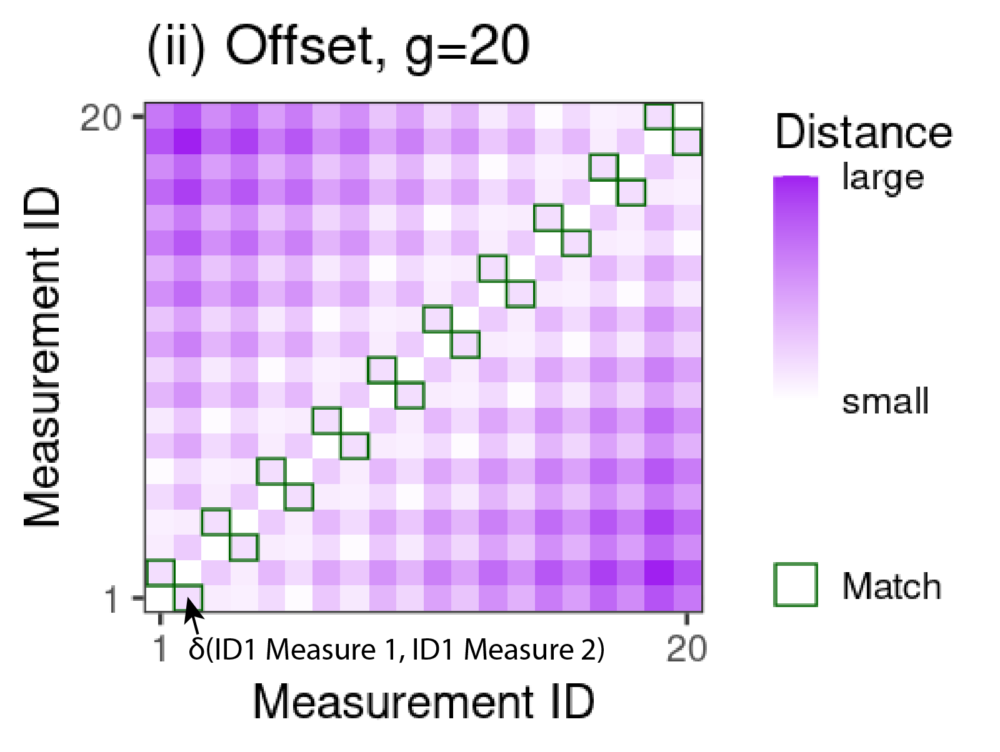
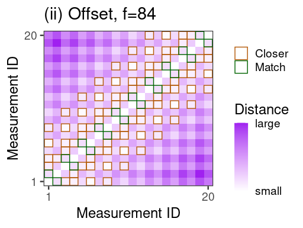
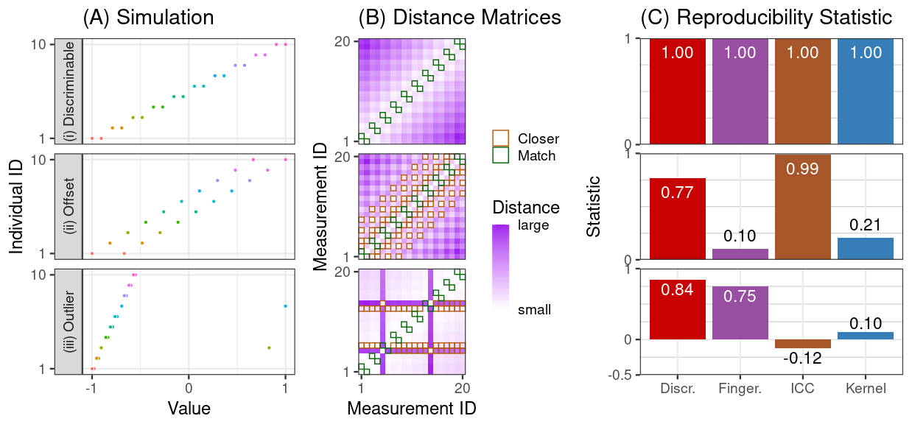
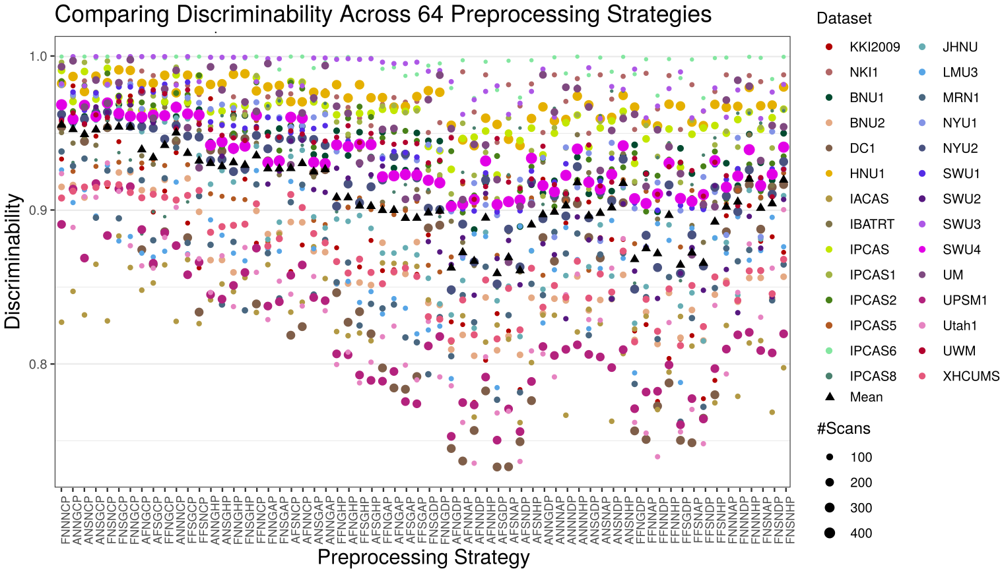
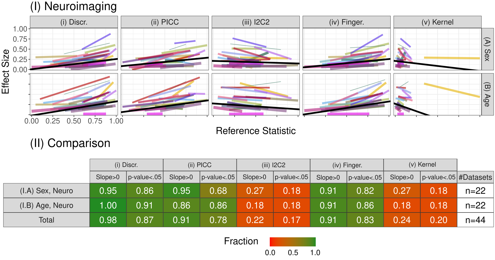

<!-- TODO add slide numbers & maybe slide name --> ### Sources of variability in high-dimensional datasets  Eric W. Bridgeford | [ericwb.me](http://ericwb.me) --- name:talk ### Outline - [Motivation](#defn) - [Replicability of High-Dimensional Measurements](#discr) - [Variability in High-Dimensional Measurements](#causal) - [Discussion](#disc) ### [Additional Content](#extra) --- name:defn ### Outline - Motivation - [Replicability of High-Dimensional Measurements](#discr) - [Variability in High-Dimensional Measurements](#causal) - [Discussion](#disc) ### [Additional Content](#extra) --- ### Typical approach to inference <p align="center">  </p> - goal: establish relationship between exposure of interest and measurements, conditional on other covariates - conclusion is externally valid: our analysis "generalizes" - domain expertise: "downplay" role of unmeasured covariates, and reach stable conclusion --- ### Similar measurements can be collected using many different techniques <p align="center">  </p> - different acquisition protocols impart different "characteristics" to measurements --- ### Measurements are usually manipulated prior to analysis  - Data pre-processing and processing: procedure of obtaining useful derivatives for our question of interest - .ye[derivative]: information that is obtained from a raw measurement (a function of the raw measurement) --- ### Reality of inference  - .ye[Accidental deviations]: sources of variability not of scientific interest - .ye[Systematic deviations]: variability of interest - fundamental question of data science: identify systematic deviations in the presence of accidental deviations --- name:discr ### Outline - [Motivation](#defn) - Replicability of High-Dimensional Measurements - [Background](#discr-mot) - [Results](#discr-results) - [Discussion](#discr-disc) - [Variability in High-Dimensional Measurements](#causal) - [Discussion](#disc) ### [Additional Content](#extra) --- name:discr-mot ### Outline - [Motivation](#defn) - Replicability of High-Dimensional Measurements - Background - [Results](#discr-results) - [Discussion](#discr-disc) - [Variability in High-Dimensional Measurements](#causal) - [Discussion](#disc) ### [Additional Content](#extra) --- ### What is Reproducibility? - .ye[Reproducibility]: ability to replicate, or reproduce, a conclusion - serves as a "first-pass" check for scientific utility - currently in a "reproducibility crisis" --- ### How do we address the Reproducibility Crisis? - fix post hoc analyses (e.g., $p$-values)? - fix measurements (e.g., measurement reproducibility)? Proposal: design experiments to maximize .ye[inter-item discriminability], rather than simply checking reproducibility after conducting the experiment --- ### What do we want of our data? If we measure a sample multiple times, then each measurement of that sample is closer to all the other measurements of that sample, as compared to any of the measurements of other samples.  Perfect discriminability --- ### What do we want of our data? Imperfect discriminability  --- ### What do we want of our statistic? Discriminability is the probability of a measurement from the same item being closer than a measurement from a different item.  --- ### Discriminability Statistic: Step 1 - Compute $N \times N$ pairwise distance matrix between all measurements <!-- - measurements are indexed first by individual identifier, and second by "measurement session" -->   <!-- <img src="images/discr/dummy_sim_dmtx.png"/> --> --- ### Discriminability Statistic: Step 2 - For each measurement, identify which measurements are from the same individual (<font color="green">green boxes</font>) - let $\color{green}g$ be the total number of <font color="green">green boxes = 20</font>  --- ### Discriminability Statistic: Step 3 - For each measurement, identify measurements from other individuals that are more similar than the measurement from the same individual (<font color="orange">orange boxes</font>) - let $\color{orange}f$ be the total number of <font color="orange">orange boxes = 84</font>  --- ### Discriminability Statistic - Discr = $1 - \frac{\color{orange}f}{N(N-1) - \color{green}g} = 1 - \frac{\color{orange}{84}}{20\cdot 19 - \color{green}{20}} \approx .77$ <img src="images/discr/dummy_sim_repr.png"/> High discriminability: same-item measurements are more similar than across-item measurements --- ### Discriminability is Construct Valid  <!-- - under the given construct (what the simulation is supposed to show), discriminability provides a sensible statistic --> <!-- - other approaches do not --> --- name:discr-results ### Outline - [Motivation](#defn) - Replicability of High-Dimensional Measurements - [Background](#discr-mot) - Results - [Discussion](#discr-disc) - [Variability in High-Dimensional Measurements](#causal) - [Discussion](#disc) ### [Additional Content](#extra) --- ### What data will we be using? - CoRR metadataset - $N>1,700$ individuals imaged across $26$ different datasets - anatomical MRI and fMRI scans for each - Individuals are measured at least twice --- ### Analysis Procedure Process each measurement using $192$ different pipelines 1. Brain alignment (ANTs/FSL) 2. Frequency filtering (Y/N) 3. Scrubbing (Y/N) 4. Global Signal Regression (Y/N) 5. Parcellation (4 options) 6. Rescaling connectomes (Raw, Log, Pass-to-Rank) $192 = 2 \times 2 \times 2 \times 2 \times 4 \times 3$ All options represent strategies experts consider useful --- ### Pipeline impacts discriminability <center></center> <!-- - Consequence: choosing how to pre-process your data matters --> --- ### Marginally most discriminabile options tend to be best global options <center><img src="images/discr/individual_methods.png" style="height: 200px"/></center> - Each point is the pairwise difference holding other options fixed (e.g., FNNGCP - ANNGCP) - Best pipeline marginally (FNNGCP) is second best pipeline overall, and not much worse (2-sample test, p=.14) than the best pipeline FNNNCP - We may not need to always try every pre-processing strategy every time --- ### Selection via Discriminability improves inference For each pre-processing strategy, for each dataset, compute: 1. Within-dataset Discr. 2. Demographic effects (sex and age) within the dataset via Distance Correlation (DCorr) 3. Within a single dataset, regress demographic effect on Discr. Question: does a higher discriminability tend to yield larger effects for known biological signals? --- ### Selection via Discriminability improves inference  <!-- - Consequence: maximizing discriminability in general improves downstream inference --> --- ### Outline - [Motivation](#defn) - Replicability of High-Dimensional Measurements - [Background](#discr-mot) - [Results](#discr-results) - Contributions - [Variability in High-Dimensional Measurements](#causal) - [Discussion](#disc) ### [Additional Content](#extra) --- ### Contributions 1. Discriminability quantifies the contributions of systematic and accidental deviations 3. Provide theoretical motivation for discriminability in connection with predictive accuracy (not discussed) 2. Formalize tests for assessing and comparing discriminabilities within and between collection strategies 4. Illustrate the value of discriminability for neuroscience and genomics (not discussed) data 5. Code implementations in [python](https://github.com/neurodata/hyppo) and [R](https://github.com/neurodata/r-mgc) --- ### Contributions How do we address the impact of too many processing strategies, and arbitrary subsequent tasks?  --- ### Contributions How do we address the impact of too many processing strategies, and arbitrary subsequent tasks? - .ye[Maximize desirable characteristics (e.g., discriminability) over massive meta-studies, and only change to strategies which have passed this test] <center></center> --- name:causal ### Outline - [Motivation](#defn) - [Replicability of High-Dimensional Measurements](#discr) - Variability in High-Dimensional Measurements - [Background](#causal-mot) - [Theory](#causal-theory) - [Results](#causal-results) - [Discussion](#causal-disc) - [Discussion](#disc) ### [Additional Content](#extra) --- name: causal-mot ### Outline - [Motivation](#defn) - [Replicability of High-Dimensional Measurements](#discr) - Variability in High-Dimensional Measurements - Background - [Theory](#causal-theory) - [Results](#causal-results) - [Discussion](#causal-disc) - [Discussion](#disc) ### [Additional Content](#extra) --- ### Typical problem in causal inference <center></center> - goal: estimate impact of an exposure (smoking) on measurements (cancer), given a set of covariates (ages) --- ### Problem 1: Unmeasured variables <center></center> - what if we didn't measure BMI, but BMI causes cancer and is related to smoking? --- ### Solution 1 <center></center> - Assume unmeasured variables are minimally impactful --- ### Problem 2 <center></center> - Measured: old smokers, and young non-smokers - did the smoking cause the cancer, or is cancer just a function of aging? - Technical term: .ye[Confounding] --- ### Existing work - classical causal inference focuses on this problem for univariate measurements (e.g., smoking) - some work (causal structure learning, conditional independence testing) attempts to do this in multivariate regimes - how robust are these techniques to confounding? - what do we do for more than two groups? - what happens if the relationships are .ye[complicated]? --- name:causal-theory ### Outline - [Motivation](#defn) - [Replicability of High-Dimensional Measurements](#discr) - Variability in High-Dimensional Measurements - [Background](#causal-mot) - Theory - [Results](#causal-results) - [Discussion](#causal-disc) - [Discussion](#disc) ### [Additional Content](#extra) --- ### Notation - $y_i$: an outcome of interest - $t_i$: an exposure of interest in one of $K$ groups - $x_i$: covariates - $y_i(t)$: potential outcome - what would the outcome look like if the exposure had been $t$? --- ### Causal assumptions - Consistency: $y_i = \\sum_t y_i(t) \\mathbb I\\{t_i = t\\}$ - we only observe one potential outcome (the rest are "missing") -- - Positivity: $P(t_i = t | x_i = x) > 0$ for all $x$ - covariate distributions "overlap" -- - Ignorability: $\left(y_i(1), ..., y_i(K)\right) \perp t_i | x_i$ - missing data does not depend on missing data -- - No interference: treatments of units do not impact potential outcomes of other units --- ### Motivating question - .ye[causal conditional discrepancy]: $F\_{y(k)|x} \neq F\_{y(t) | x}$ - When are causal discrepancies identifiable? --- ### Theoretical results - Under standard causal assumptions, conditional independence tests can be used for testing whether potential outcome distributions differ (conditional on covariates) - --- name:causal-results ### Outline - [Motivation](#defn) - [Replicability of High-Dimensional Measurements](#discr) - Variability in High-Dimensional Measurements - [Background](#causal-mot) - [Theory](#causal-theory) - Results - [Discussion](#causal-disc) - [Discussion](#disc) ### [Additional Content](#extra) --- name:causal-disc ### Outline - [Motivation](#defn) - [Replicability of High-Dimensional Measurements](#discr) - Variability in High-Dimensional Measurements - [Background](#causal-mot) - [Theory](#causal-theory) - [Results](#causal-results) - Discussion - [Discussion](#disc) ### [Additional Content](#extra) --- ### Acknowledgements <div class="small-container"> <img src="faces/jovo.png"/> <div class="centered">Josh Vogelstein</div> </div> <div class="small-container"> <div class="centered">Shangsi Wang</div> </div> <div class="small-container"> <img src="faces/zhi.jpeg"/> <div class="centered">Zhi Yang</div> </div> <div class="small-container"> <div class="centered">Zeyi Wang</div> </div> <div class="small-container"> <img src="faces/ting.jpeg"/> <div class="centered">Ting Xu</div> </div> <div class="small-container"> <img src="faces/cc.jpg"/> <div class="centered">Cameron Craddock</div> </div> <div class="small-container"> <img src="faces/jayanta.jpg"/> <div class="centered">Jayanta Dey</div> </div> <div class="small-container"> <img src="faces/gkiar.jpg"/> <div class="centered">Greg Kiar</div> </div> <div class="small-container"> <img src="faces/wgr.jpg"/> <div class="centered">William Gray-Roncal</div> </div> <div class="small-container"> <img src="faces/carlo.jpeg"/> <div class="centered">Carlo Colantuoni</div> </div> <div class="small-container"> <img src="faces/cdouville.jpeg"/> <div class="centered">Christopher Douville</div> </div> <div class="small-container"> <img src="faces/snoble.jpeg"/> <div class="centered">Stephanie Noble</div> </div> <div class="small-container"> <img src="faces/cep.png"/> <div class="centered">Carey Priebe</div> </div> <div class="small-container"> <img src="faces/bcaffo.jpg"/> <div class="centered">Brian Caffo</div> </div> <div class="small-container"> <img src="faces/mm.jpg"/> <div class="centered">Michael Milham</div> </div> <div class="small-container"> <img src="faces/xinian.jpg"/> <div class="centered">Xinian Zuo</div> </div> <img src="images/funding/nsf_fpo.png" STYLE="HEIGHT:95px;"/> <img src="images/funding/nih_fpo.png" STYLE="HEIGHT:95px;"/> <img src="images/funding/KAVLI.jpg" STYLE="HEIGHT:95px;"/> <img src="images/funding/schmidt.jpg" STYLE="HEIGHT:95px;"/> - [BioRxiv manuscript](https://www.biorxiv.org/content/10.1101/802629v6) - Code implementations in [python](https://github.com/neurodata/hyppo) and [R](https://github.com/neurodata/r-mgc) --- name:extra ### [Outline](#talk) ### Additional Content - [Discriminability](#discr-extra) - [Causal Discrepency Testing](#causal-extra) --- name:discr-extra ### [Outline](#talk) ### Additional Content - Discriminability - [Theory](#discr-theory) - [Other Reproducibility Statistics](#discr-other) - [Limitations](#discr-limitations) - [Extension: Discriminability Decomposition](#discr-extension) - [Causal Discrepency Testing](#causal-extra) --- name:discr-theory ### [Outline](#talk) ### Additional Content - Discriminability - Theory - [Other Reproducibility Statistics](#discr-other) - [Limitations](#discr-limitations) - [Extension: Discriminability Decomposition](#discr-extension) - [Causal Discrepency Testing](#causal-extra) --- ### Population Discriminability - population discriminability $D$ is a .ye[property of the distribution] of measurements <!-- - A sequence of items $x_i^k$ from individuals $i=1,..., N$ measured at time $k=1,..., s$ --> $D = \mathbb P(\delta(x_i^k, x_i^{k'}) < \delta(x_i^k, x_j^{k''}))$ - Probability of within-individual measurements being more similar than between-individual measurements --- ### Discriminability: unbiased and consistent - Sample Discr. $= $fraction of times $\delta(x_i^k, x_i^{k'}) < \delta(x_i^k, x_j^{k''})$ - $i, j = 1, ..., n$ and $i \neq j$ for $n$ individuals - $k, k', k'' = 1, ..., s$ and $k \neq k'$ for $s$ sessions <!-- - Probability that distances from measurements of the same individual are smaller than distances from measurements of different individuals --> - Sample Discr. is an .ye[unbiased estimator] of $D$ - Sample Discr. converges to $D$ (.ye[asymptotically consistent] in $n$) --- ### Connecting Discriminability to Downstream Inference <!-- - Fundamental question: does discriminability .ye[matter] for inference? --> <!-- ##### Assumptions --> <!-- Data follows Gaussian mixture model plus additive Gaussian noise --> #### Assumption: Multivariate Additive Noise Setting - $y_i \sim Bern(\pi)\;i.i.d.$, - $\theta_i \sim \mathcal N(\mu(y_i), \Sigma_t)\;ind.$, - (the individual means have a center which depends on the class) -- - $\epsilon_{i}^k \sim \mathcal N(c, \Sigma_e)\;i.i.d.$ and $ind.$ of $\theta_i$, - $x_{i}^k = \theta_i + \epsilon_i^k$. - (the measurements $x_i^k$ are normally dispersed about the individual means) --- ### Connecting Discriminability to Downstream Inference Suppose $(x_i^k, y_i)$ follow the Multivar. Additive Noise Setting, where $i=1, ..., n$ and $k=1,...,s$. #### Theorem 1 There exists an increasing function of $D$, $f(D)$, which provides a lower bound on the predictive accuracy of a subsequent classification task - $f(D) \leq A$, where $A$ is the Bayes Accuracy of the classification task ##### Consequence - $D \uparrow \Rightarrow f(D) \uparrow$ --- #### Corollary 2 A strategy with a higher $D$ provably provides a higher bound on predictive accuracy than a strategy with a lower $D$ ##### Consequence Suppose $D_1 < D_2$, then since $f$ is increasing, $f(D_1) < f(D_2)$ ##### Implication We should use strategies with higher discriminability, as the worst-case for subsequent inference is better than a generic strategy with a lower discriminability --- ### Simulation Setup <!-- - Construct $3$ simple simulations where the data are describable in Gaussian (or non-Gaussian) framework --> <!-- - level of "noise" in the simulation is varied --> <!-- <center><img src="images/discr/sims_sim.png" style="height: 450px"/></center> -->  --- ### Discriminability and Accuracy  <!-- <center><img src="images/discr/sims_acc.png" style="height: 450px"/></center> --> Discr. decreases proportionally with accuracy --- ### Are data discriminable? <!-- - Fundamental question: are the data discriminable at all? -->  --- ### Is one dataset more discriminable than another?  --- name:discr-other ### [Outline](#talk) ### Additional Content - Discriminability - [Theory](#discr-theory) - Other Reproducibility Statistics - [Limitations](#discr-limitations) - [Extension: Discriminability Decomposition](#discr-extension) - [Causal Discrepency Testing](#causal-extra) --- #### Intraclass Correlation Coefficient (ICC) - can be thought of as looking at the "relative size" of the within-group vs total variance - $y_i^k = \mu + \mu_i + \epsilon_i^k$ - let $\mu_i \sim \mathcal N(0, \sigma_b^2)$, and $\epsilon_i^k \sim \mathcal N(0, \sigma_e^2)$ - $ICC = \frac{\sigma_b^2}{\sigma_e^2 + \sigma_b^2}$ - $ICC \uparrow \Rightarrow $ between-group variance "contains" most of the total variance - negative ICC? mean squared error-based estimator --- #### Image Intraclass Correlation Coefficient (I2C2) - simplest "multivariate extension" of ICC - $y_i^k = \mu + \mu_i + \epsilon_i^k$ - let $\mu \sim \mathcal N(0, \Sigma_b)$ and $\epsilon_i^k \sim \mathcal N(0, \Sigma_e)$ - Wilk's $\Lambda = \frac{\det(\Sigma_b)}{\det(\Sigma_b) + \det(\Sigma_e)}$ - $I2C2 = \frac{tr(\Sigma_b)}{tr(\Sigma_b) + tr(\Sigma_e)}$ - "ratio of total variability accounted for between groups" - Why I2C2 over Wilk's $\Lambda$? Ease-of-use for high-dimensional data --- #### Fingerprinting Index (Finger.) - "greedy discriminability" - $Finger. = \mathbb P(\delta(x_i^1, x_i^2) < \delta(x_i^1, x_j^2) \;\forall\; i \neq j)$ - $\forall\; i \neq j$: this property must occur for every measurement in the second session --- #### Distance Components (Kernel) - "non-parametric ANOVA" - total dispersion is the sum of between and within-sample dispersions ($B$ and $W$) - $DISCO = \frac{\frac{B}{n - 1}}{\frac{W}{n\cdot s - n}}$ - "pseudo F" statistic --- name:discr-limitations ### [Outline](#talk) ### Additional Content - Discriminability - [Theory](#discr-theory) - [Other Reproducibility Statistics](#discr-other) - Limitations - [Extension: Discriminability Decomposition](#discr-extension) - [Causal Discrepency Testing](#causal-extra) --- ### Limitations - experimental design is not "one-size-fits-all" <!-- - future scientific questions will still need to consider the question of interest --> <!-- - e.g., an analysis of task fMRI may not want to use a pre-processing pipeline with global signal regression, but for resting-state fMRI, this may not be an issue --> - Discriminability is not sufficient for practical utility - categorical covariates are meaningful but not discriminable - fingerprints are discriminable but not typically biological useful - These statistics are not immune to sample characteristics - confounds such as age may inflate discriminability --- name:discr-extension ### [Outline](#talk) ### Additional Content - Discriminability - [Theory](#discr-theory) - [Other Reproducibility Statistics](#discr-other) - [Limitations](#discr-limitations) - Extension: Discriminability Decomposition - [Causal Discrepency Testing](#causal-extra) --- ### Extension: Discriminability Decomposition #### Setting $(x_{i}^k, y_i)$ $i=1, ..., n$, $k=1,...,s$, $y_i \in$ \{$1, ..., Y$\} - associated with each individual, I have some other categorical covariate of interest, $y_i$, taking one of $Y$ possible values - Can the population discriminability be decomposed as a sum of the within-group discriminabilities? --- ### Within-Group Discriminability - Let $D(y) = \mathbb P(\delta(x_i^k, x_i^{k'}) < \delta(x_i^k, x_j^{k''}) | y_i, y_j = y)$ - $D(y)$ is the group discriminability for group $y$ - "How discriminable are samples from group $y$?" -- - Note that $W = \mathbb P(\delta(x_i^k, x_i^{k'}) < \delta(x_i^k, x_j^{k''}) | y_i= y_j)$= $\frac{\mathbb P(\delta(x_i^k, x_i^{k'}) < \delta(x_i^k, x_j^{k''}) , y_i = y_j)}{\mathbb P(y_i = y_j)}$ by def conditional probability -- - Let $w(y) = \mathbb P(y_i=y_j = y)$ denote the within-group weights - With $\omega = \sum_y w(y)$, then: $W = \frac{1}{\omega}\sum_y w(y) D(y)$ is the within-group Discriminability --- ### Between-Group Discriminability - Let $D(y, y') = P(\delta(x_i^k, x_i^{k'}) < \delta(x_i^k, x_j^{k''}) | y_i = y, y_j = y')$ - $D(y, y')$ is the between-group discriminability for groups $y$ and $y'$ - "How discriminable are samples from group $y$ vs group $y'$, and vice versa?" -- - Note that $B = \mathbb P(\delta(x_i^k, x_i^{k'}) < \delta(x_i^k, x_j^{k''}) | y_i\neq y_j)$= $\frac{\mathbb P(\delta(x_i^k, x_i^{k'}) < \delta(x_i^k, x_j^{k''}) , y_i \neq y_j)}{\mathbb P(y_i \neq y_j)}$ by def conditional probability -- - Let $b(y, y') = \mathbb P(y_i = y, y_j = y')$ denote the between group weights - With $\beta = \sum_{y\neq y'} b(y,y')$, then: $B = \frac{1}{\beta}\sum_{y \neq y'}b(y,y')D(y,y')$ is the between-group Discriminability --- ### Discriminability Decomposition - $D = \omega W + \beta B$ - Population discriminability is a weighted sum of within and between-group Discriminabilities - Can look at how the within, or between, group discriminabilities compare - $\frac{W}{D}$ ratio of within-group Discriminability and pop. discriminability - $\frac{B}{D}$ ratio of between-group Discriminability and pop. discriminabillity - are certain groups more discriminable than others? - are certain between-group discriminabilities greater than others? - "ANOVA-esque" or DISCO-esque" --- name:causal-extra ### [Outline](#talk) ### Additional Content - [Discriminability](#discr-extra) - Causal Discrepency Testing - [Unconditional discrepency testing](#causal-uncond) --- name:causal-uncond ### [Outline](#talk) ### Additional Content - [Discriminability](#discr-extra) - Causal Discrepency Testing - Unconditional discrepency testing ---